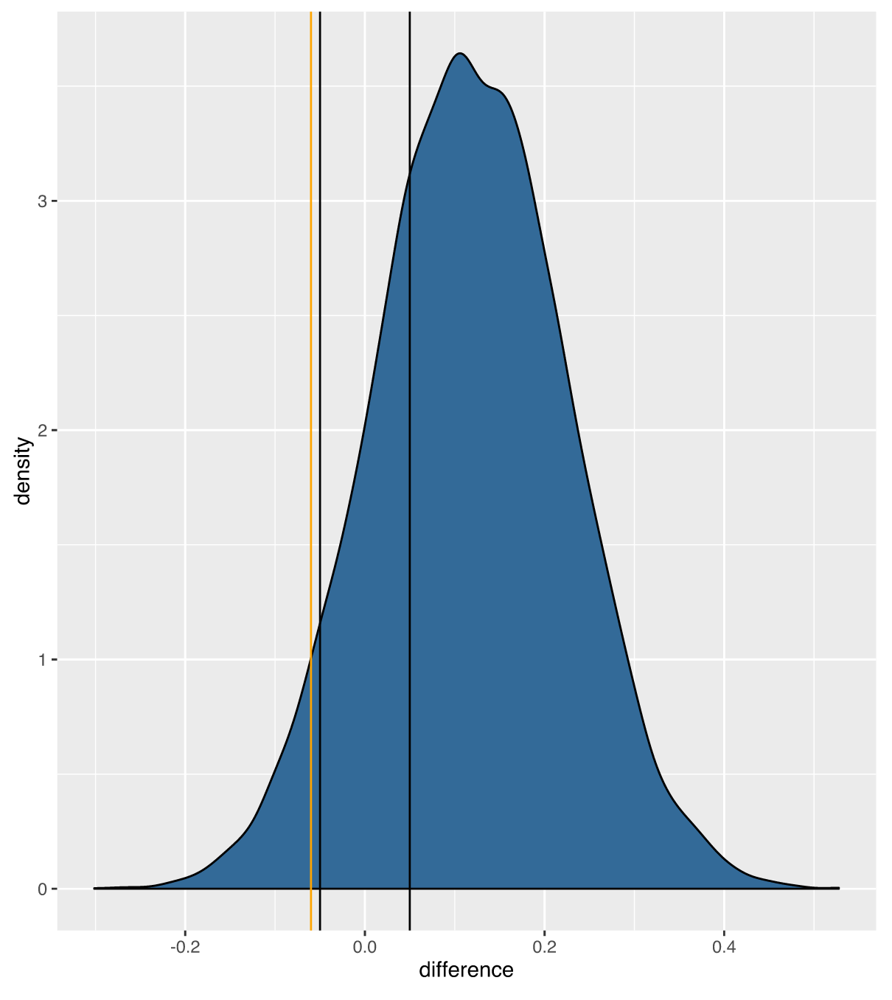
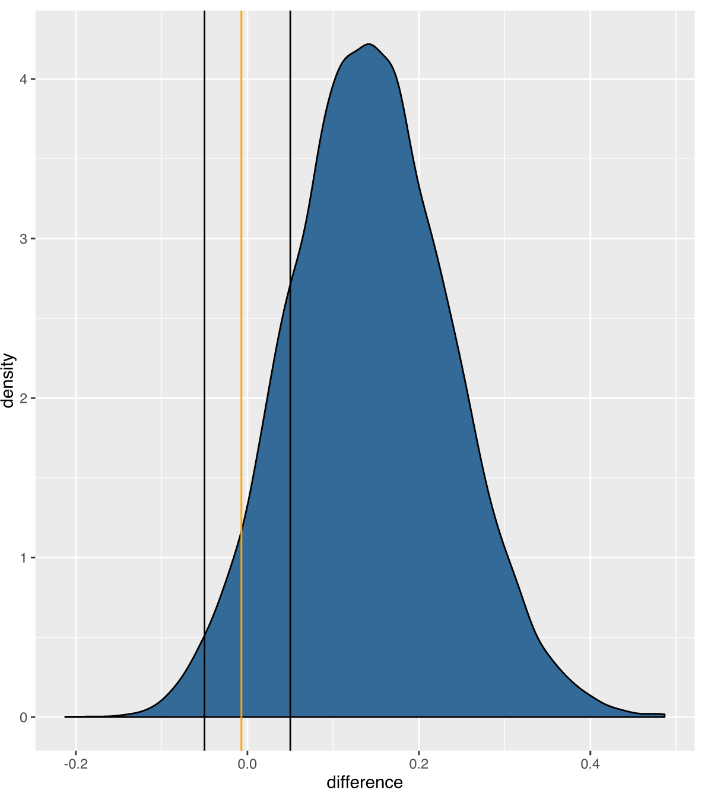

A Bayesian Re-analysis of Mouse Lung Tumor Occurrence Following Arsenic Exposure
Lyle D. Burgoon, Ph.D.
US Army Engineer Research and Development Center
Waalkes, et al. (2014): 50ppb and 500ppb arsenic causes mouse lung tumors; 5000ppb does not.
Cohen, et al. (2014 and 2015): Waalkes, et al. vehicle data aren't similar to what Tokar saw in 2011; Waalkes, et al. vehicle data also don't match the historical control study from Charles River.
Waalkes, et al. respond to Cohen, et al, disagreeing on all counts.
Intriguing debate...
Perhaps a Bayesian approach could settle this analytically.
1) Bayesian analysis could see how similar/different the control distributions actually are
2) Then use the composite control distribution as the prior for Waalkes, et al control distribution
3) Then re-analyze Waalkes, et al data to see if the results still match up
Comparing the Tokar, et al. 2012 controls to the Waalkes, et al controls
Combine the Tokar, et al 2012 controls with the Waalkes, et al controls and compare to Tokar, et al 2011 controls
STOP! Hammer Time!
Bottom-line:
The controls from the Tokar, et al 2011 and 2012 studies really aren't that different from the Waalkes, et al controls.
They're likely exchaneable and from the same overall distribution.
Someone might ask:
Given: Control tumor incidence: ~28%
ROPE of +/-10% would equivocate incidences of ~18-38% as being similar to 28%
Even at +/-10% the 95% Highest Density Interval (HDI) would still be outside of the ROPE
Would need a ROPE of +/-15%, equivocating incidences of ~13-43% for 95% HDI to be inside the ROPE
Thanks to Ingrid Druwe, ORISE, for collaborating on this work
Use a spacebar or arrow keys to navigate